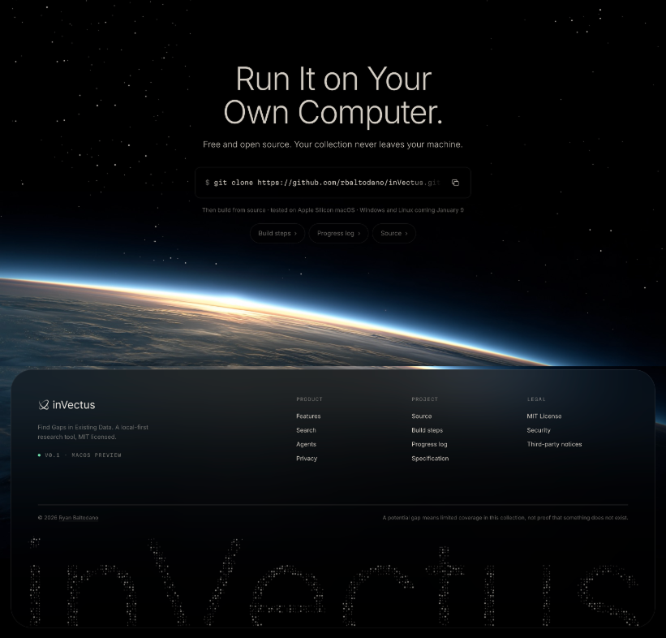

Independent product · Design and engineering
inVectus
From a medical research question to an explorable collection.
My older brother was looking for a worthwhile research topic for medical school. I wanted to help him examine the existing literature and find areas worth a closer look. Keyword search could find papers, but it was harder to see how ideas related across a collection.
In Angrove, I had used embeddings to connect concepts and retrieve sources. I recognized another use for that knowledge: compare papers in semantic space and surface patterns of limited coverage for human investigation. That question became inVectus, a standalone research workspace intended to work across disciplines.
- My role
- Independent creator: product framing, interaction design, React/TypeScript interface, Rust engine integration, and evaluation.
- Stack
- React, TypeScript, Tauri 2, Rust, ONNX embeddings, DuckDB, LanceDB.
- Today
- Working prototype tested locally on macOS. Import, semantic search, maps, gap inspection, and saved decisions work; calibration remains experimental. Windows/Linux and signed distribution remain unverified.

The architecture behind the question
The useful question became: where does this collection show demand, limited coverage, older coverage, or possible connections between regions? A blank patch on a 2D map cannot answer that. Regions and gap scores use the embedding-space graph; the map helps a person browse the results.
| Boundary | Responsibility and choice |
|---|---|
| React + TypeScript | Search, import mapping, collection state, evidence review, and saved decisions. Typed commands cross the Tauri boundary. |
| Shared Rust crates | Import, embeddings, retrieval, region graph, scoring, and job execution serve both the desktop and CLI. |
| DuckDB + LanceDB | Project metadata and review records live in DuckDB; vectors live in LanceDB. No account or server is required for the core workflow. |
Matching dimensions do not guarantee compatible embeddings. Each vector table records its model revision, checksums, prefixes, pooling, normalization, and runtime. Queries must use a compatible space. Exact search remains available; approximate nearest-neighbor search can re-score returned candidates exactly, but cannot recover a neighbor it omitted.
Read the architecture and tradeoffs or inspect the search implementation.
Make the evidence usable
I designed the workspace around moving between a candidate, its papers, and the collection map. Resizable panes keep evidence in context and stack when the window cannot fit both. The divider supports pointer dragging and keyboard resizing. Collection readiness, job progress, and errors remain part of the workflow.
Saving a candidate and deciding to pursue it are separate actions. Bookmarks retain a snapshot; decisions and notes have their own records, so rescanning does not erase the person's work.



The product website
I designed and built the inVectus website alongside the app. The closing section pairs a quiet star field with Earth’s illuminated horizon and a rounded footer. Restrained typography gives the build instructions a clear place within the larger composition.
Implementation you can inspect
Project navigation preserves each tab's return path. A shared React jobs provider follows Rust job events so changing screens does not lose progress. Indexing checkpoints completed work, reuses unchanged inputs, and supports cancellation. This makes a potentially long-running local process understandable in the interface.
Inspect the frontend and engine boundaries
- Typed commands and result shapes: collections, vector spaces, search results, jobs, and review records.
- WorkspaceSplit: measured layout, pointer capture, an ARIA separator, and Arrow/Home/End key handling.
- JobsProvider: shared progress state follows backend events.
- Embedding jobs: checkpointing, input reuse, and cancellation.
- Saved records: bookmarks and human decisions remain separate.
I use AI coding assistants extensively. My ownership includes framing the problem, choosing system boundaries, reviewing implementation, and checking behavior against the intended interaction. The architecture and tests make those decisions inspectable.
Evaluate mechanics and usefulness separately
Frontend regression tests cover navigation, map focus, search wording, loading, and pane sizing. Engine fixtures exercise import, search, gap scoring, and saved review behavior. These checks establish software behavior; they do not establish that a suggested topic is scientifically valuable.
Early technical spikes compared embedding speed, nearest-neighbor recall, clustering, and map quality on a documented 2,000-paper sample from an Apple M4 Pro. The first records in scan order were a biased sample. A fast retrieval result or a visually convincing cluster was not enough to validate research usefulness.
Tests, measured experiments, and a reproducible demo
- Pane-sizing regression tests protect minimum widths and stacking.
- Search-presentation tests keep empty scopes, stale calibration, and filtered assessments explicit.
- Engine gap fixtures exercise planted coverage/stale/bridge cases and review behavior using synthetic embeddings.
- Technical spike reports record hardware, sample selection, outcomes, and failed approaches. The progress ledger records later measurements and backtests.
- The 540-record fictional demo exercises the workflow without private data. It validates mechanics, not discoveries.
What a gap can mean
Limited coverage in an indexed collection is not proof of novelty, scientific value, or absence from the wider literature. Incomplete datasets, specialist vocabulary, embedding limitations, and clustering artifacts can all create apparent gaps. Calibration remains approximate, and the default title/text split is a proxy rather than adjudicated relevance labels.
The product is a research exploration and decision-support tool. It surfaces candidates, shows supporting evidence and score components, and leaves the research judgment with a person. The next validation is domain-expert review of candidate usefulness; no research discovery or user-outcome result is claimed here.
Back to the portfolioWhere the embedding work began: Angrove